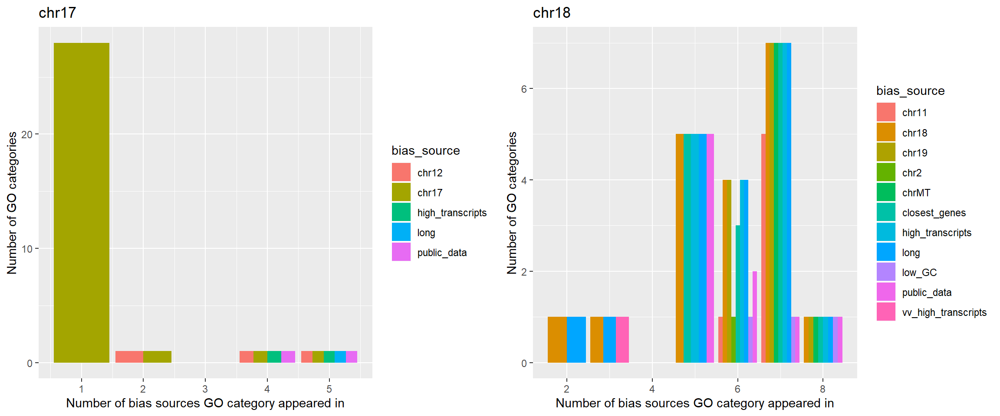

library("devtools")
load_all()
library(tidyverse)
library(DT)
library(RColorBrewer)
library(gridExtra)
library(formattable)This analysis is looking at the GO categories that have been identified using the biased methods of generating gene lists. I’d like some summary statistics. 1. For each GO category in the file that was used to
where was the list of genes obtained from? I think this was a gtf file of all the genes in the genome, but how many of these were in the GO categories? How many annotations does each gene have? This is getting in to territory that has been explored elsewhere.
I think we want to establish which of our results can identify biases in the data rather than just general rubbish.
I generated completely random lists of genes and ran these through the same gene ontology analysis. Two gene sets out of 200 returned any results at all.
Could it be that the genes that have interesting properties, like length, location, high number of transcripts stand out from the rest so get studied more, get annotated more and therefore generate more significant GO results?
Hopefully this is the case for some, and then for some, we can actually use these categories to identify biases.
#suspect_cats <- read_tsv("../data/suspect_categories.txt")
suspect_cats <- read_tsv("../data/suspect_categories_archive.txt") # I think this was the 30 limit
suspect_cats %>%
count(bias_source) %>%
arrange(desc(n))suspect_cats %>%
count(GO_ID) %>%
count(n)get_IDs_in_category <- function(category){
filter(suspect_cats, bias_source == category) %>%
pull(GO_ID)
}
all_bias_categories <- suspect_cats %>%
distinct(bias_source) %>%
pull(bias_source)
get_count_for_cat <- function(category){
suspect_cats %>%
filter(GO_ID %in% get_IDs_in_category(category)) %>%
count(GO_ID) %>%
count(n)
}Add a bias_type column that is almost the same as bias_source, but groups some of the categories together so that if some categories are found in 2 datasets - eg. long and high transcripts, and long and very high transcripts, and long and vv high transcripts, this is just shown as long and high transcripts. This makes some of the plots clearer.
suspect_cats <- suspect_cats %>%
mutate(bias_type = if_else(grepl("chr", bias_source), "chr", bias_source)) %>%
mutate(bias_type = str_replace_all(bias_type, "very_high_transcripts", "high_transcripts")) %>%
mutate(bias_type = str_replace_all(bias_type, "vv_high_transcripts", "high_transcripts")) %>%
mutate(bias_type = str_replace_all(bias_type, "very_long", "long"))plot_more_detail <- function(category){
suspect_cats %>%
filter(GO_ID %in% get_IDs_in_category(category)) %>%
count(GO_ID) %>%
left_join(suspect_cats) %>%
arrange(desc(n)) %>%
group_by(n) %>%
count(bias_type) %>%
ggplot(aes(x = n, y = nn, fill = bias_type)) +
geom_bar(stat = "identity", position = "dodge") +
ggtitle(category) +
xlab("Number of bias sources GO category appeared in") +
ylab("Number of GO categories")
}
p <- lapply(all_bias_categories, plot_more_detail)
names(p) <- all_bias_categories
grid.arrange(p[["vv_high_transcripts"]], p[["very_high_transcripts"]], ncol = 2)grid.arrange(p[["high_transcripts"]], ncol = 2)grid.arrange(p[["very_long"]], p[["long"]], ncol = 2)The vv high transcripts plot shows that 357 GO categories are identified only from the genes with a very high number of transcripts. Just under 100 are found in both high transcripts and long gene sets.
Most (159) of the categories identified from the very_high_transcripts set of genes are also only identified from that single category.
For the high transcripts there are still 246 GO categories only identified from that single category, though more 30 are identified in 2 categories, the 2nd category being long genes.
The very_long set identified 96 GO categories unique to the very long set, though more (96) are found in both high transcripts and long sets
grid.arrange(p[["very_short"]], ncol = 2)grid.arrange(p[["low_GC"]], p[["very_low_GC"]], ncol = 2)grid.arrange(p[["public_data"]], p[["closest_genes"]], ncol = 2)The closest gene set does not have any GO categories that are unique to the closest gene set. They all also appear in long, high_transcripts, and most appear in the public data sets as well. This seems to indicate that these categories find significance too easily. But, they didn’t come up when completely random sets of genes were used, so it may be that these properties of genes have made them more likely to be investigated and annotated??
We’ll try and look into this by seeing how many GO annotations these sets of genes have.
The GC and chr plots make more sense when the categories are divided in to separate chromosomes.
plot_more_detail <- function(category){
suspect_cats %>%
filter(GO_ID %in% get_IDs_in_category(category)) %>%
count(GO_ID) %>%
left_join(suspect_cats) %>%
arrange(desc(n)) %>%
group_by(n) %>%
count(bias_source) %>%
ggplot(aes(x = n, y = nn, fill = bias_source)) +
geom_bar(stat = "identity", position = "dodge") +
ggtitle(category) +
xlab("Number of bias sources GO category appeared in") +
ylab("Number of GO categories")
}
p <- lapply(all_bias_categories, plot_more_detail)
names(p) <- all_bias_categories
grid.arrange(p[["low_GC"]], p[["very_low_GC"]], ncol = 2)grid.arrange(p[["chr11"]], p[["chr12"]], ncol = 2)grid.arrange(p[["chr17"]], p[["chr18"]], ncol = 2)
grid.arrange(p[["chr19"]], p[["chrMT"]], ncol = 2)# load the set of genes and GO categories - this is probably a very inefficient way of holding the data but it can be changed if it causes problems
load("../data/gathered_cats.rda")
categories_per_gene <- count(gathered_cats, gene)
load("../data/closest_gene.rda")
all_genes <- unlist(closest_gene_lists)
tabled_genes <- table(all_genes)
tabled_genes <- tabled_genes[order(tabled_genes, decreasing = TRUE)]
gene_counts <- data.frame(gene_name = names(tabled_genes), n = as.vector(tabled_genes))# load the set of genes and GO categories - this is probably a very inefficient way of holding the data but it can be changed if it causes problems
load("../data/gathered_cats.rda")
load("../data/closest_gene.rda")
all_genes <- unlist(closest_gene_lists)
tabled_genes <- table(all_genes)
tabled_genes <- tabled_genes[order(tabled_genes, decreasing = TRUE)]
gene_counts <- data.frame(gene_name = names(tabled_genes), n_closest = as.vector(tabled_genes))
categories_per_gene <- count(gathered_cats, gene)
closest_gene_go_counts <- gene_counts %>%
mutate(gene_name = toupper(gene_name)) %>%
full_join(categories_per_gene, by = c("gene_name" = "gene")) %>%
replace_na(list(n_closest = 0)) %>%
arrange(desc(n))
go_annot_summary <- plyr::rename(closest_gene_go_counts, c("n" = "n_GO_cats"))# load the set of genes and GO categories - this is probably a very inefficient way of holding the data but it can be changed if it causes problems
load("../data/top_200.rda") # the public data
all_genes <- unlist(top200)
go_annot_summary <- count(as.data.frame(all_genes), all_genes) %>%
plyr::rename(c("all_genes" = "gene_name", "n" = "n_public")) %>%
mutate(gene_name = toupper(gene_name)) %>%
full_join(go_annot_summary) %>%
replace_na(list(n_public = 0)) %>%
arrange(desc(n_public))
# the top couple of genes from the public set are not in the gmt file
load("../data/biased_transcripts.rda")
process_transcript_genes <- function(list_name){
all_genes <- as.vector(unlist(biased_transcripts[[list_name]]))
column_name <- paste0("n_", list_name)
count(as.data.frame(all_genes), all_genes) %>%
plyr::rename(c("all_genes" = "gene_name", "n" = column_name)) %>%
mutate(gene_name = toupper(gene_name)) %>%
right_join(go_annot_summary)
}
go_annot_summary <- process_transcript_genes("0.9")
go_annot_summary <- process_transcript_genes("0.95")
go_annot_summary <- process_transcript_genes("0.99")
go_annot_summary <- go_annot_summary %>%
replace(is.na(.), 0) %>%
mutate(transcript_total = rowSums(.[2:4]))
go_annot_summary <- go_annot_summary %>%
mutate(min_per_row = apply(go_annot_summary[,c(5,6,8)], 1, min))
go_annot_summary <- go_annot_summary %>%
mutate(median_per_row = apply(go_annot_summary[,c(5,6,8)], 1, median))
plot(go_annot_summary$min_per_row, go_annot_summary$n_GO_cats)plot(go_annot_summary$median_per_row, go_annot_summary$n_GO_cats)plot(density(go_annot_summary$n_GO_cats))go_annot_no_0 <- filter(go_annot_summary, n_GO_cats > 0)
plot(density(go_annot_no_0$n_GO_cats))#boxplot(log2((go_annot_no_0$n_GO_cats)))Not really sure what to do with this…
Select some genes to make an example gene list for GOliath
g1 <- filter(go_annot_summary, transcript_total <2 & n_public < 2 & n_closest < 2 & n_GO_cats > 1) %>%
pull(gene_name)
eg_set_of_genes <- g1[ceiling(runif(200, min = 0, max = length(g1) - 1))]x <- c("GM14483", "SSXB10", "FAM87B", "MINOS1-NBL1", "SMAP2","CTPS1", "MOB3C", "DLEU2L", "KIAA1324", "CD58","ZNF697", "IL6R", "SLAMF9", "SH2D1B", "FASLG","LINC01686", "PACERR", "FAM89A", "GCSAML", "LUCAT1","EPB41L4A", "GRAMD2B", "TXNDC15", "LINC01024", "SMIM3","LINC01366", "PXDC1", "HCG18", "TRIM39-RPP21", "MICA","HCP5", "MICB")